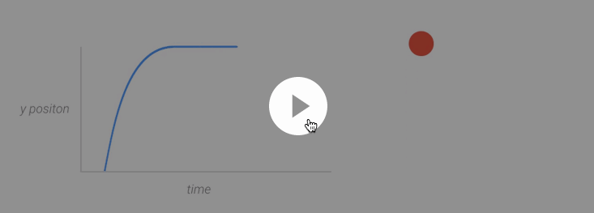

material design
by {Wait} | blog: http://blog.h4fan.com请使用↑↓←→来控制
更多meterial design信息：
http://developer.android.com/design/material/index.html
或者
http://www.ui.cn/Material/index.html 高逼格的动画
好的用户体验
动效展示理念
应该：
灵活的加速、温和的减速，这样的动效让用户感到自然且愉悦。
不应该：
线性的运动让人感到机械生硬。观察运动曲线，我们可以看到在运动开始和结尾处，运动速率突然的改变，这让人感到非常的突兀、不真实。
特殊案例：进场、退场
当物体进场时，确保物体进场时处于最大速率。这样的运动便显得非常自然：因为物体在进场前便开始了运动，而不是进场时才开始运动。同样的，当物体退场时，要确保物体处于最大速率，而不是减速。在进场时缓入，在退场时缓出，这样用户的注意力会集中在动效上。然而，大多数情况下，这不是设计者想要的结果。
应该：
进场和退场时的速率为最大速率，能够营造出自信感十足的动效。
不应该：
在进场时加速，退场时减速。这样用户就会因速率的变化而分心。
迅捷响应交互行为
动效的迅捷反馈，可以让用户充满信任感和愉悦感。当用户与应用交互时，所反馈的动效不但极具美感，符合物理逻辑，而且能够愉悦用户。反馈动效的设计必须深思熟虑且具有目的性，而不能随性设计，反馈动效应温和 ，不让用户分心。
- 触控、语音输入、键盘、鼠标是首要考虑的输入模式
- 尽管UI元素是有形的，但是在物理上被限制在了设备屏幕之内。视觉线索和动效提供的线索能够在用户和设备之间建立沟通的巧玲，让用户确认自己的输入有效，继而指引用户操作。
最佳实践
视觉反馈在特定的输入点出现：例如手指与屏幕的接触点，或是麦克风图标处。
触控涟漪-按压/释放
最佳实践
以触控点为原点的动效反馈，应该：
不应该：
有意义的转场效果
对于用户来说，很难弄清楚应该在应用的何处集中注意力，也很难搞清元素是如何从A点运动到B点的。审慎、精心设计的动效能够高效引导用户的视觉注意点，让整体效果循序渐进，避免用户因为元素重新排列或者布局改变而感到混淆。同时提升整体的美感和使用体验。动效设计不应该仅仅美丽，而且还应该具备功能性目的。
视觉连贯性

富有层次的时间感。
在构建转场效果时，要考虑哪些元素需要运动，他们的运动的持续时间又是多久，从何时开始，何时结束？确保动效能够表达出信息层级。这样用户便可知道哪些元素最为重要，并且创建视觉轨迹
最重要的元素最先出现，最次要的最后出现，但是这并不是定式。转场元素的运动要具备分明的时间感，整体流畅而不杂乱。
应该：
不应该：
细节愉悦用户
在应用中大大小小的元素都可以进行动效设计，无论是细腻的图标小动效，或是整体的关键性转场效果和交互动效。所有的元素紧密合作，一致构建出无缝的使用体验，让应用美丽而具功能性。
动效的最基本使用在于转场动效，除了这种显而易见的地方，应用还应该在一些小处愉悦用户。比方说菜单图标会因为点击而变成箭头：除了能够提示用户操作，而且能让用户感受到惊喜。用户会关注这些小处的细节。